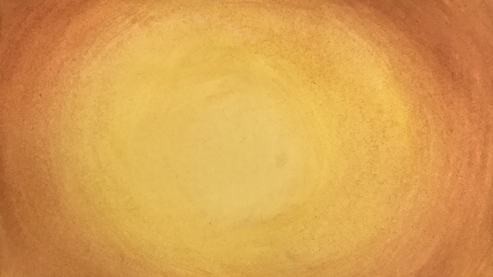
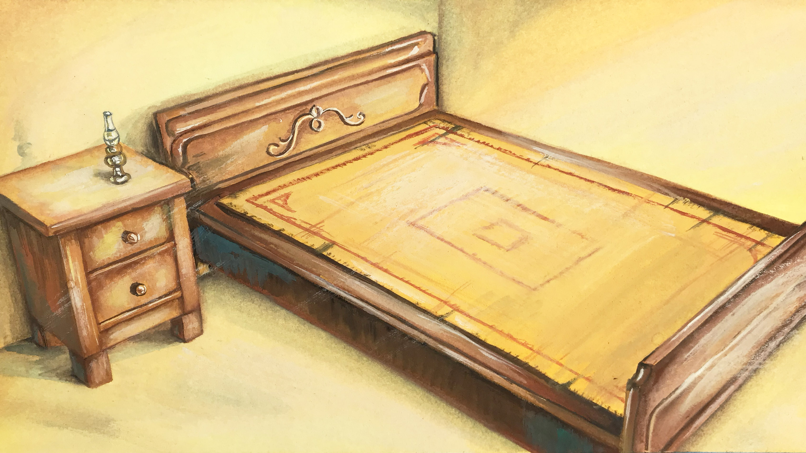
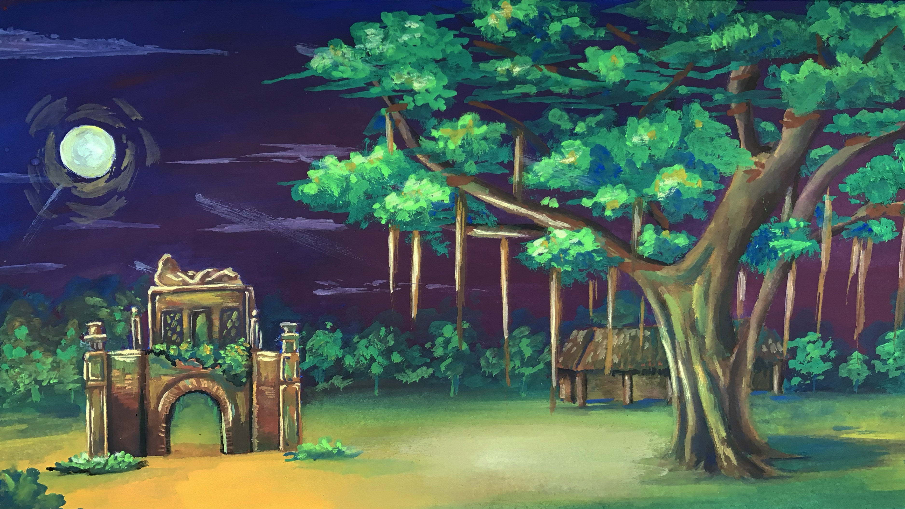
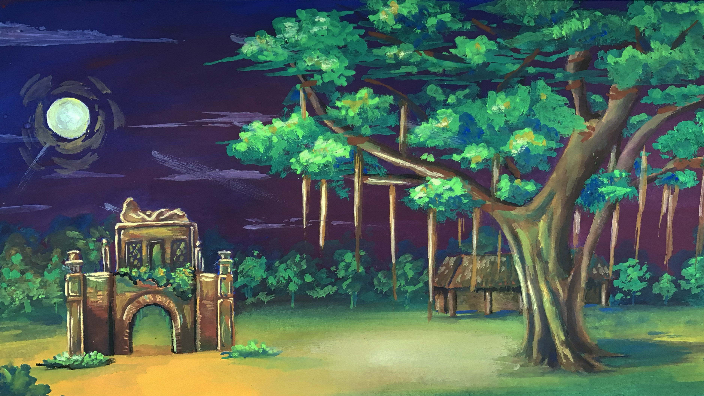
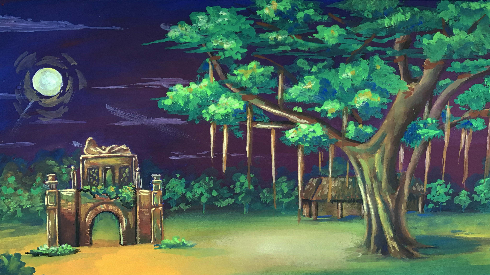

BACKGROUND
20 backgrounds are painted for the film in total. The backgrounds are either traced from 3d models or photographs. they have a yellow watercolor underpainting to create a warm feeling throughout the film. The images themselves are painted in gouache. The backgrounds are shaded and cropped using Photoshop to create different times and settings for the film.


 

